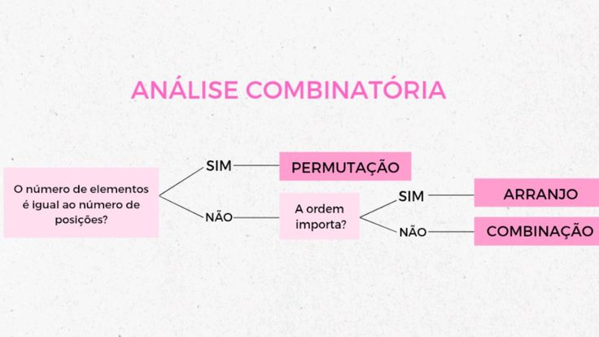

Contagem e Análise Combinatória
D32-Resolver problema de contagem utilizando o princípio multiplicativo ou noções de permutação simples, arranjo simples e/ou combinação simples.
A análise combinatória é um ramo da matemática que estuda as diferentes maneiras de contar, organizar e agrupar elementos dentro de um conjunto, respeitando determinadas condições. Esse conteúdo é fundamental não só em contextos acadêmicos, mas também em áreas práticas como computação, estatística, jogos, probabilidade e planejamento.
Princípio Fundamental da Contagem
O princípio fundamental da contagem afirma que, se um processo pode ser realizado em etapas sucessivas e independentes, o número total de maneiras de realizá-lo é o produto do número de possibilidades de cada etapa.
Exemplo: Se uma pessoa pode escolher 3 camisas e 2 calças, ela poderá formar 3 × 2 = 6 combinações de roupas diferentes.
Fatorial
O fatorial de um número inteiro positivo n, indicado por n!, representa o produto de todos os inteiros positivos de 1 até n.
Exemplo: 5! = 5 × 4 × 3 × 2 × 1 = 120 Esse conceito é essencial para entender permutações e combinações.
Técnicas da Análise Combinatória
1. Permutação A permutação é toda arrumação de elementos em que a ordem importa. Permutação simples (todos os elementos distintos): Fórmula: Pₙ = n! Exemplo: De quantas formas podemos organizar 4 livros diferentes? P₄ = 4! = 24 formas. Permutação com repetição (elementos repetidos): Fórmula: P = n! / (a! × b! × c! ...) Exemplo: A palavra "MASSA" tem 5 letras, com 2 letras "S" e 2 letras "A": P = 5! / (2! × 2!) = 120 / 4 = 30 formas.
2. Arranjo O arranjo é uma sequência de elementos escolhidos de um conjunto, onde a ordem importa, mas nem todos os elementos precisam ser usados. Fórmula: Aₙ,ₚ = n! / (n-p)! Exemplo: De 6 alunos, quantas duplas ordenadas podemos formar? A₆,₂ = 6! / (6-2)! = 720 / 24 = 30.
3. Combinação A combinação representa a escolha de elementos sem se importar com a ordem. Fórmula: Cₙ,ₚ = n! / (p! × (n-p)!) Exemplo: Quantos grupos de 3 alunos podem ser formados a partir de 5? C₅,₃ = 5! / (3! × 2!) = 120 / (6×2) = 120 / 12 = 10.
Exercicios de analise combinatoria Vídeo-aula